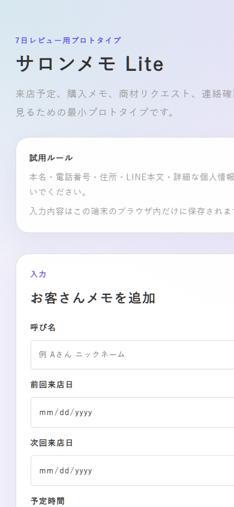
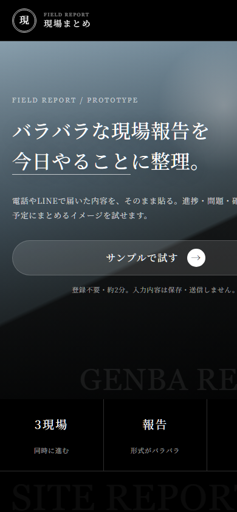
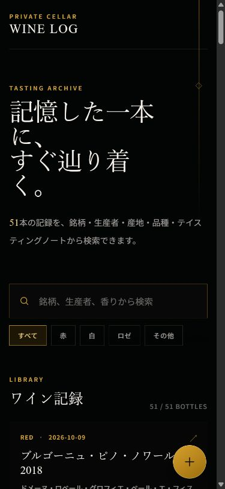

何度も同じことを確認する
情報が人や場所ごとに散らばり、確認や聞き直しが繰り返される。
LESS, THEN BETTER.
理念はAIドクター。私たちの課題を診断し、適切な処置を検討する。そのうえで、足すのではなく、引く思想で解決するサポートを提供します。
COMMON FRICTION
情報が人や場所ごとに散らばり、確認や聞き直しが繰り返される。
電話やLINEで届いた内容が埋もれ、必要な行動へつながらない。
予定、顧客情報、次にすることを頭だけで管理し、判断力を使い続ける。
使っているシステムはあっても、二重入力や例外対応が減らない。
WHAT Quant Log DOES
最後に困った具体的な場面から、繰り返している手間と現在の対処を整理します。
入力、確認、共有の流れを整え、次にすることが分かる小さな仕組みにします。
最初から大きく作り込まず、実際に使える最小の形で負担の変化を確認します。
APP SAMPLES
実際の困りごとを起点に、スマートフォンで使える最小の形へ整理したサンプルです。

SALON
来店予定、購入メモ、商材確認、次の連絡を一画面に整理。

FIELD REPORT
バラバラな現場報告を、進捗、問題、次の行動へ整理。

PERSONAL LOG
記録、検索、振り返りを、すぐ辿り着ける一つの場所に集約。
FAQ
何度も繰り返す確認、伝達漏れ、思い出す負担、情報の散らばりなど、日常や仕事に残る小さな手間を扱います。
いいえ。最初に困りごとを整理し、文章、一覧表、手作業を含め、最も小さく負担を減らせる方法から考えます。
掲載しているものは、具体的な利用場面を確認するために小さく形にしたサンプルです。
CONTACT
名刺を受け取った方は、お渡しした本人へ直接お声がけください。アドレスや入力フォームは設けていません。
Profile
会社員・Quant Log運営者。
為替トレーディングの実践を通じて、資金管理・損失管理・確率思考・長期視点を学ぶ。現在はその知見を、個人の人生設計・副業・資源配分の領域へ応用している。
AIを活用したLP制作、画像生成、動画制作、コンテンツ設計、データ分析を行い、会社員や副業初心者に向けて「お金・時間・集中力・判断力」を可視化するコンテンツの発信をしてきた。
現在は、法人、個人向けの”手間を減らすことで人生の質を上げる”という理念のもと、活動している。